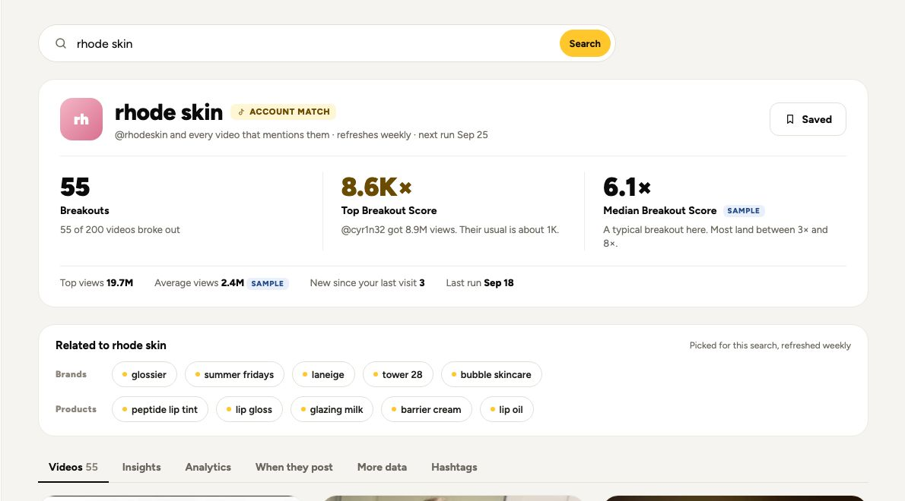
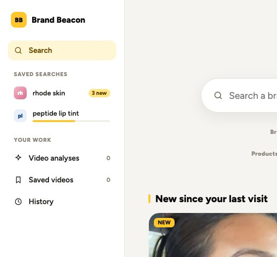
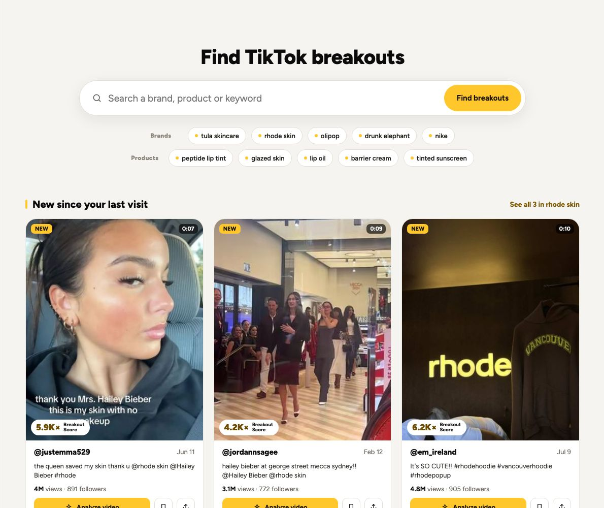
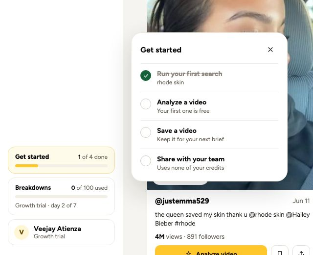
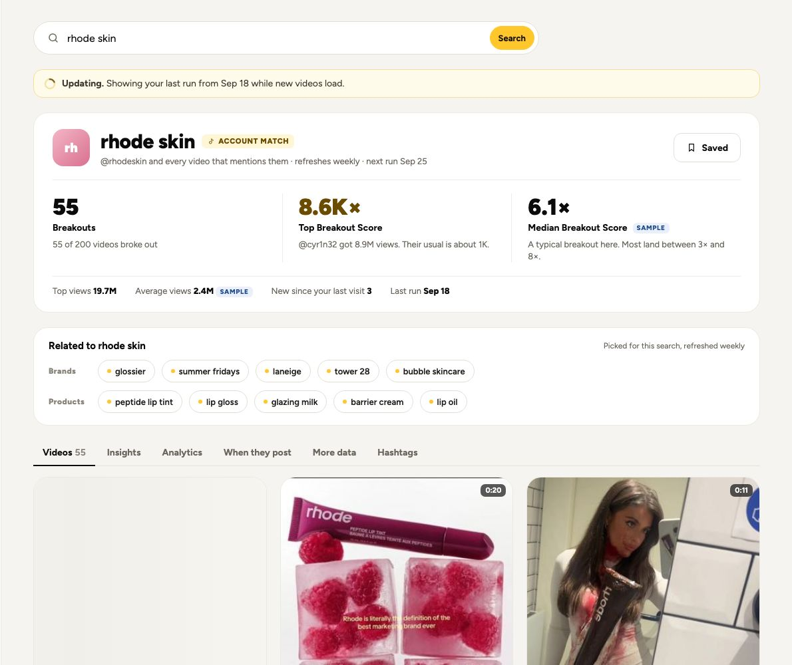
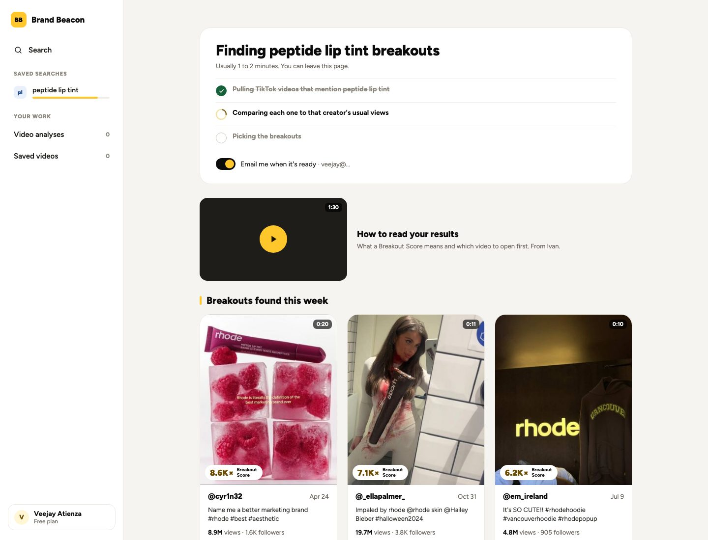
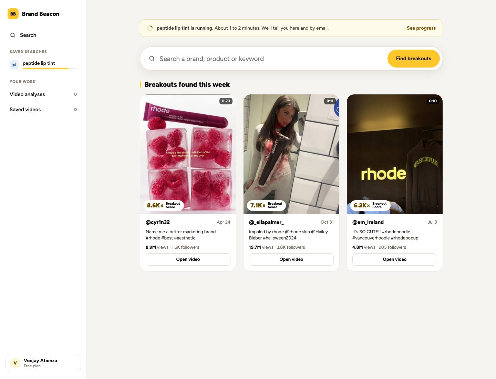
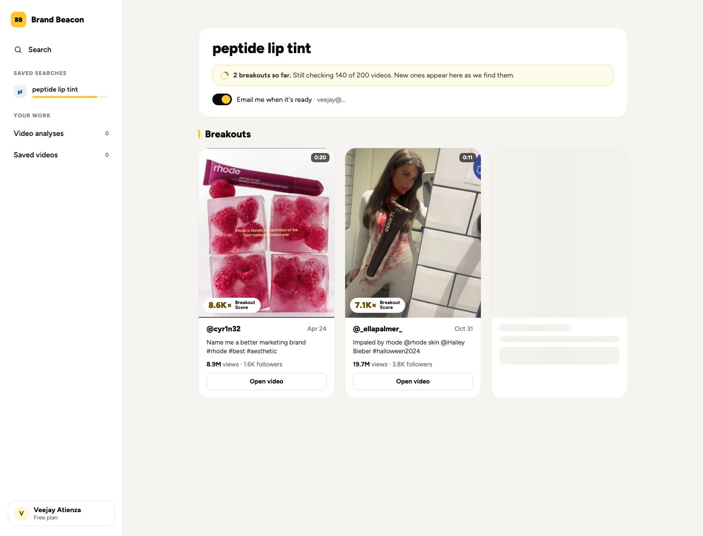
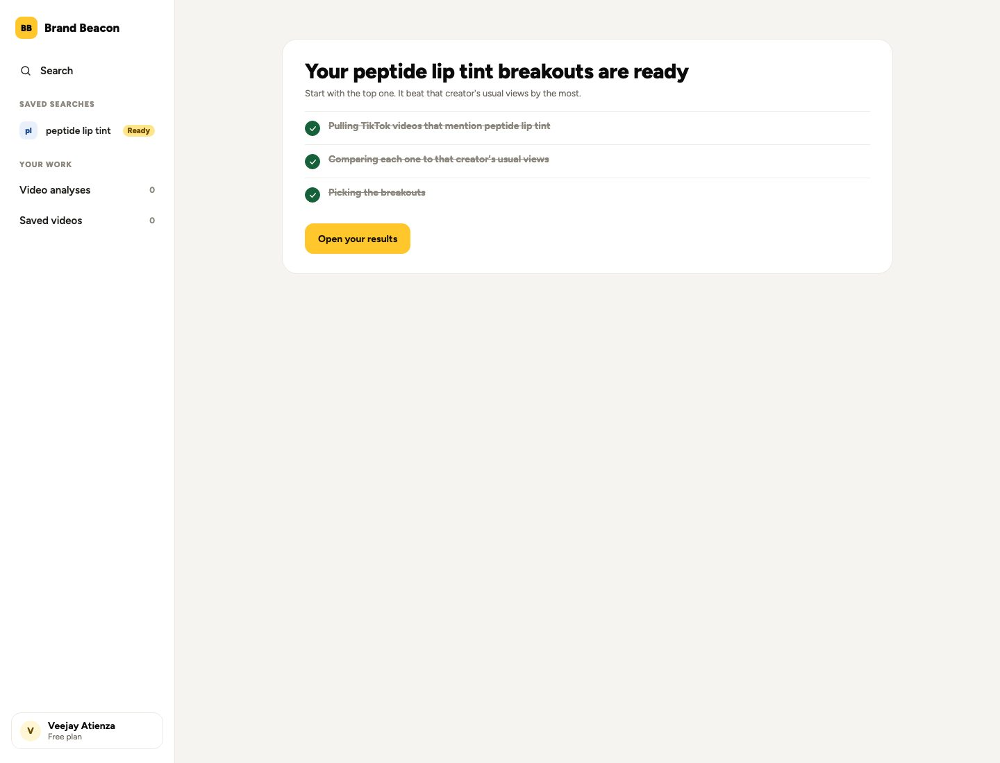
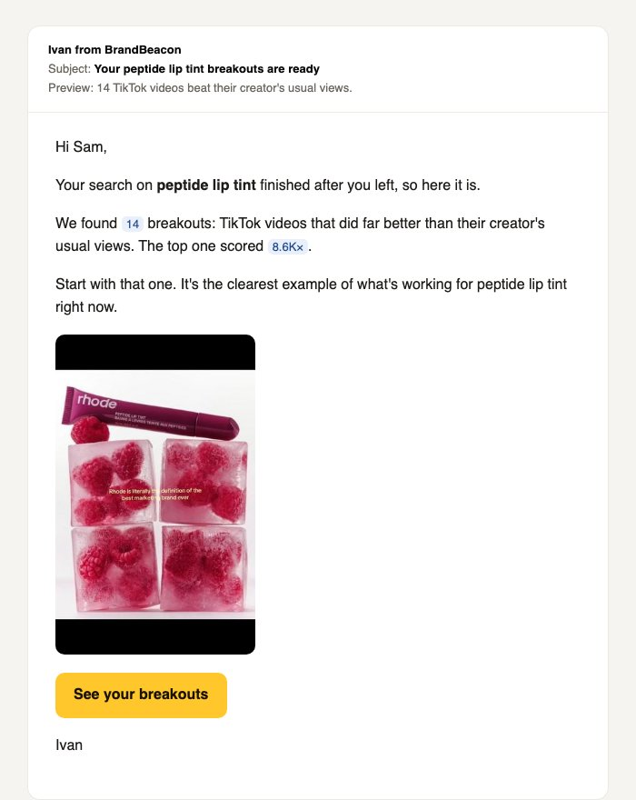

The 3.0 rows from the Ivan Sheet, drawn from the picks in the 3.0 Questions Doc. One search box, no My Feed, everything you own in the left sidebar. All numbers come from the real rhode skin run (Sep 18) unless marked SAMPLE.
No Brand / Product toggle. One box: "Search a brand, product or keyword".
If the term matches a TikTok account, the account shows first. Pressing Enter searches everything for one credit.
For Ivan: when "rhode" matches @rhodeskin, does Enter open the brand page, or keyword results with the brand card on top? The mock does the second.
Smarter keyword suggestions
Veejay

Before a search: two short rows on Home, Brands and Products.
After a search: "Related to rhode skin" gives 5 brands and 5 product terms picked for that keyword. Cached, so each keyword costs one AI call a week.
No hashtags, since search is keywords only.
For Ivan: OK to drop hashtags from suggestions?
Results page data
Veejay
Three numbers up top: Breakouts (55 of 200), Top Breakout Score (8.6K×), Median Breakout Score.
Median, not average, because one 8.6K× video drags an average far above a typical breakout. 40 of the 55 sit between 3× and 8×.
Views move to a quieter line below: top views, average views, new since your last visit.
For Ivan: are these the three numbers? You also listed average and top views; they're on the second line.
Left sidebar: saved searches, video analyses, search history
Veejay

Library is gone. Saved searches sit up front, each with a count of new breakouts.
A search that's still running shows in the list with a progress bar, then a toast when it's ready. You can keep browsing.
For Ivan: keep Video analyses and Saved videos as separate items, or merge them into one?
My Feed: keep, or replace with search terms
Veejay

My Feed is removed. Home is the big search, the suggestions, and one row of 3 new breakouts from saved searches.
Home only reads stored results, so it opens instantly.
For Ivan: keep the "New since your last visit" row, or show only the search?
Onboarding checklist
Veejay

A small "1 of 4 done" card at the bottom of the sidebar. Click it to see the steps. It goes away once all four are done.
The steps tick themselves off in the prototype as you analyze, save and share.
For Ivan: Free gets 0 video analyses today. Does Free get one, so "Analyze a video" can be finished?
Speed: slow results, brands stuck loading
Lester

Every page opens on its last stored run. A thin "Updating" bar and placeholder cards show while new videos load. No full-page spinner.
For Lester: the brand page never waits on a TikTok fetch. Fetches happen on the weekly refresh or on Refresh now.
For Lester, once he's back: can every search and brand page load from the database in under 2 seconds?
First search journey: where BB drops people after Run search
Veejay
Today: keyword, expand keywords, Run search, then a loading page with nothing to do. Three options for that page. All three keep the search running in the sidebar, email when it's ready, and end on the same Ready screen.
A. Wait and learn
My pick for the first search

Same pattern as UGC Breakouts processing: three steps that say what's happening, a "How to read your results" video, then breakouts other searches found this week.
The wait teaches what a Breakout Score is, so the results make sense when they land.
"Email me when it's ready" is on by default and says they can leave.
B. Back to Home and keep browsing
Ivan's idea

Run search lands on Home. A slim bar says it's running, with See progress. Breakouts found this week fill the page.
Good for later searches. On the first one, a new user hasn't seen a result yet, so the browse row is easy to misread as their results.
C. Results appear as they're found
Needs Lester

The results page fills in as each video is scored: "2 breakouts so far. Still checking 140 of 200 videos."
No empty wait at all, and the best fix long term. It depends on the backend scoring videos one at a time, which belongs with the Speed row.
Ready (all three)

The thumbnails come from the stored rhode skin run; a real peptide lip tint search would show its own. "Usually 1 to 2 minutes" is from our 22 Sept test and should match whatever Lester measures.
Recommendation: A now (it only needs the stored "this week" breakouts and the how-to video), C once the Speed work lands, B for every search after the first.
For Ivan: A for the first search, B for every search after that? And is the how-to video the one from the UGC Breakouts processing screen, or a BB version?
First search complete email
Veejay

Trigger: the first search completes. Once per account, never for later searches. Skip it if they already opened the results.
Subject: "Your {{search_term}} breakouts are ready". Preview: "{{breakout_count}} TikTok videos beat their creator's usual views."
Type, one picture (the top video's still) and one button, signed by Ivan, like the rest of the program.
It replaces B1 "Results ready" in the approved free flow emails, written for someone who left. B1 also listed searches and analyses left; that's dropped, since the free plan has changed since 24 Sept.
For Lester: event search_completed (first one), merge tags first_name, search_term, breakout_count, top_score, top_video_thumb, results_url. The 14 and 8.6K× in the mock are merge tag samples.
For Ivan: did B1 ever go live? If it did, this is a copy change only.